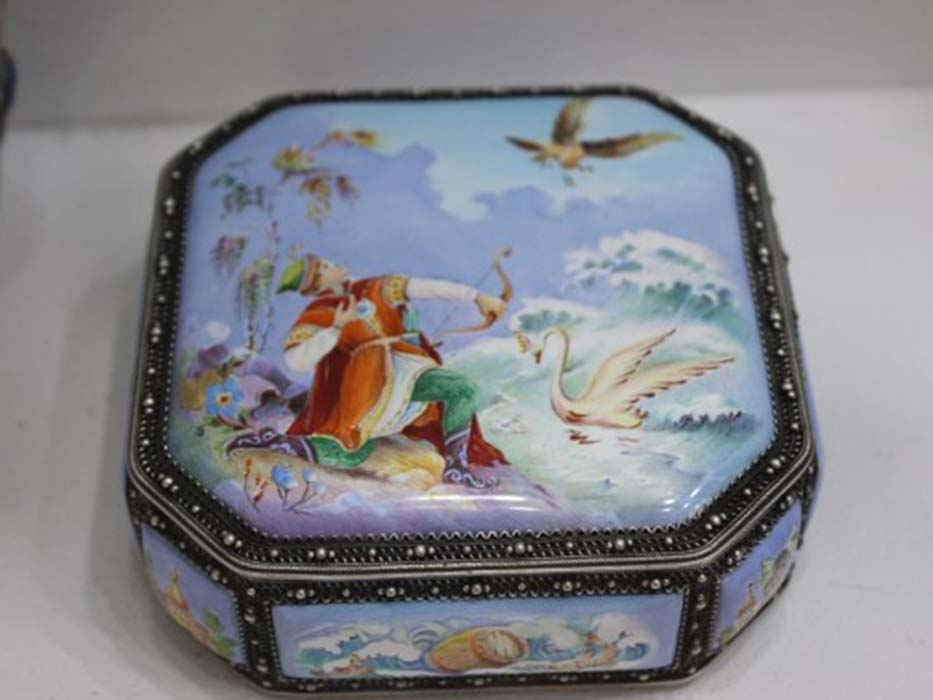
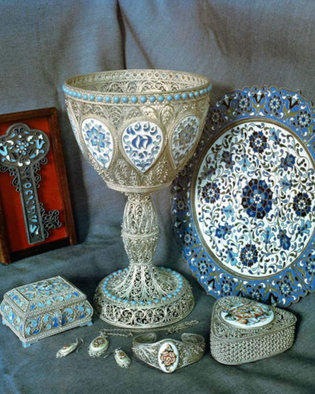

Разновидности финифти
Разновидности финифти
 Разновидности финифти
Разновидности финифти
В XVIII веке русская финифть стала известна за пределами страны, искусство развивалось, миниатюры на эмали ценились наравне с драгоценными камнями. Промысел процветал в Нижнем Новгороде, Костроме и Угличе. Ученый Михаил Ломоносов внес вклад в развитие эмальерного дела: по его инициативе построили стеклодельный завод, стекло использовали как основу для красок. В Академии художеств в Петербурге был основан класс «живописи по финифти», в котором учились будущие художники.
Во многом, направление искусства стало популярным благодаря мастерству эмальеров из Ростова Великого, в те годы — духовного центра страны. В ростовские старинные церкви и монастыри приезжали паломники из далеких уголков России, каждый из них хотел увезти с собой памятную вещь. Небольшие и яркие финифтевые иконки, в отличие от образов из драгоценных металлов, стоили недорого и массово продавались в церковных лавках.
Ростов издавна славился своими иконописцами, первые мастерские эмальеров появились в городе в 1760-е годы. Затем открылись цеха, где над церковными заказами работали ремесленники: на тяжелом и вредном производстве эмаль плавили в печах, в краски добавляли свинец, чтобы снизить температуру плавления. Со временем Ростов стал снабжать финифтью монастыри по всей стране, яркие иконки пользовались спросом у народа. Параллельно развивалась и «светская» финифть, мастера изготавливали подносы и блюда, украшали столовые приборы. Состоятельные дамы носили браслеты и кольца с эмалями вместо драгоценных камней, мужчины покупали декорированные финифтью часы, трубки и табакерки.
В ХIХ веке основным товаром ростовских эмальеров были ладанки и иконки с ликами святых, а также шкатулки с городскими и монастырскими видами. Многие художники копировали работы местных иконописцев и картины известных европейских и русских мастеров: Боттичелли, Рафаэля, Виктора Васнецова. К концу века преобладала светская тематика изделий, среди состоятельных горожан стали популярны портреты на заказ, выполненные в технике финифти.
К началу ХХ века ростовская финифть пользовалась все меньшим спросом. Новые технологии штамповки и печати делали производство эмалей экономически невыгодным, мастера вынуждены были в день изготавливать сотни небольших образков. Художники писали иконки и вставки для декоративных предметов по шаблону, художественная сторона отходила на второй план. Снова интерес к ростовской финифти появился уже при советской власти.
Расцвет финифти в России пришелся на XVI–XVII века, тогда же сложились основные жанры цветной эмали: на декоративных предметах мастера изображали сказочные и исторические сюжеты, пейзажи и православные храмы.  А на ювелирных изделиях — цветочные орнаменты. Главным заказчиком в течение долгого времени оставалась церковь: долговечные, яркие и изящные миниатюры украшали оклады икон и одежду священнослужителей, а паломники увозили с собой из монастырей небольшие эмалевые образы святых на память.
Финифть изготавливали в мастерских Киева и Москвы, но как массовый промысел она распространилась на севере страны. В XVII веке производство эмалей наладили мастера из города Усолье (сегодня — Сольвычегодск), а затем ремесло пришло в Вологду. Усольские художники нашли свой стиль: они изображали на белом фоне растительные композиции, райских птиц, зверей и мифологических персонажей. Но главным узнаваемым мотивом вологодской и усольской финифти стал узор «тюльпан», его наносили тонкими кисточками и небольшими штрихами. В мифологических сюжетах встречались персонажи славянского фольклора и северных сказаний: изображали птицу Сирин, лебедей, оленей и львов.
Эмальеры изучали иностранные церковные книги, художественные приемы и орнаменты заграничных художников. Изначально они использовали большую палитру ярких красок: помимо основных красного, желтого, зеленого и синего цветов, писали также розовыми, охристыми и лиловыми оттенками.
Эмальерное искусство севера повлияло на развитие крупных ювелирных центров страны. Художников из Усолья приглашали в Москву и другие города налаживать производство финифти. Однако в середине XVIII века массовое производство украшений привело к тому, что сложные многоцветные эмали уступили место двуцветным (синим, зеленым), и в целом в промысле вологодской финифти наметился спад.